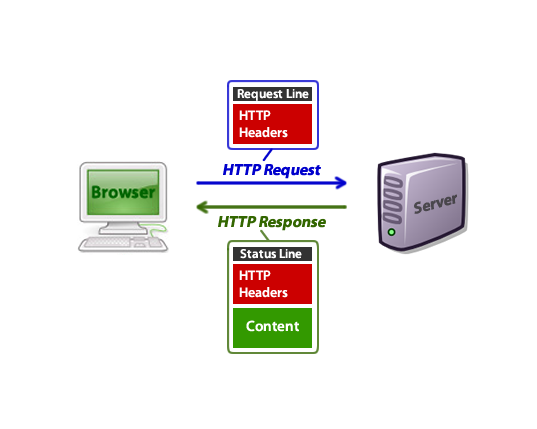

Сокеты
Со́кет (англ. socket — разъём) — название программного интерфейса для обеспечения обмена данными между процессами. Процессы при таком обмене могут исполняться как на одной ЭВМ, так и на различных ЭВМ, связанных между собой сетью. Сокет — абстрактный объект, представляющий конечную точку соединения.
Следует различать клиентские и серверные сокеты. Клиентские сокеты грубо можно сравнить с конечными аппаратами телефонной сети, а серверные — с коммутаторами. Клиентское приложение (например, браузер) использует только клиентские сокеты, а серверное (например, веб-сервер, которому браузер посылает запросы) — как клиентские, так и серверные сокеты.
Интерфейс сокетов впервые появился в BSD Unix. Программный интерфейс сокетов описан в стандарте POSIX.1 и в той или иной мере поддерживается всеми современными операционными системами.
Принципы сокетов
Для взаимодействия между машинами с помощью стека протоколов TCP/IP используются адреса и порты. Адрес представляет собой 32-битную структуру для протокола IPv4, 128-битную для IPv6. Номер порта — целое число в диапазоне от 0 до 65535 (для протокола TCP).Эта пара определяет сокет («гнездо», соответствующее адресу и порту). В процессе обмена, как правило, используется два сокета — сокет отправителя и сокет получателя. Например, при обращении к серверу на HTTP-порт сокет будет выглядеть так: 194.106.118.30:80, а ответ будет поступать на mmm.nnn.ppp.qqq: xxxxx.
Каждый процесс может создать «слушающий» сокет (серверный сокет) и привязать его к какому-нибудь порту операционной системы (в UNIX непривилегированные процессы не могут использовать порты меньше 1024).
Слушающий процесс обычно находится в цикле ожидания, то есть просыпается при появлении нового соединения. При этом сохраняется возможность проверить наличие соединений на данный момент, установить тайм-аут для операции и т. д.
Каждый сокет имеет свой адрес. ОС семейства UNIX могут поддерживать много типов адресов, но обязательными являются INET-адрес и UNIX-адрес. Если привязать сокет к UNIX-адресу, то будет создан специальный файл (файл сокета) по заданному пути, через который смогут сообщаться любые локальные процессы путём чтения/записи из него (см. Доменный сокет Unix). Сокеты типа INET доступны из сети и требуют выделения номера порта.
Обычно клиент явно «подсоединяется» к слушателю, после чего любое чтение или запись через его файловый дескриптор будут передавать данные между ним и сервером.
Windows sockets
Показать код
#include <iostream>
#include <sstream>
#include <string>
// Для корректной работы freeaddrinfo в MinGW
// Подробнее: http://stackoverflow.com/a/20306451
#define _WIN32_WINNT 0x501
#include <WinSock2.h>
#include <WS2tcpip.h>
// Необходимо, чтобы линковка происходила с DLL-библиотекой
// Для работы с сокетам
#pragma comment(lib, "Ws2_32.lib")
using std::cerr;
int main()
{
WSADATA wsaData; // служебная структура для хранение информации
// о реализации Windows Sockets
// старт использования библиотеки сокетов процессом
// (подгружается Ws2_32.dll)
int result = WSAStartup(MAKEWORD(2, 2), &wsaData);
// Если произошла ошибка подгрузки библиотеки
if (result != 0) {
cerr << "WSAStartup failed: " << result << "\n";
return result;
}
struct addrinfo* addr = NULL; // структура, хранящая информацию
// об IP-адресе слущающего сокета
// Шаблон для инициализации структуры адреса
struct addrinfo hints;
ZeroMemory(&hints, sizeof(hints));
hints.ai_family = AF_INET; // AF_INET определяет, что будет
// использоваться сеть для работы с сокетом
hints.ai_socktype = SOCK_STREAM; // Задаем потоковый тип сокета
hints.ai_protocol = IPPROTO_TCP; // Используем протокол TCP
hints.ai_flags = AI_PASSIVE; // Сокет будет биндиться на адрес,
// чтобы принимать входящие соединения
// Инициализируем структуру, хранящую адрес сокета - addr
// Наш HTTP-сервер будет висеть на 8000-м порту локалхоста
result = getaddrinfo("127.0.0.1", "8000", &hints, &addr);
// Если инициализация структуры адреса завершилась с ошибкой,
// выведем сообщением об этом и завершим выполнение программы
if (result != 0) {
cerr << "getaddrinfo failed: " << result << "\n";
WSACleanup(); // выгрузка библиотеки Ws2_32.dll
return 1;
}
// Создание сокета
int listen_socket = socket(addr->ai_family, addr->ai_socktype,
addr->ai_protocol);
// Если создание сокета завершилось с ошибкой, выводим сообщение,
// освобождаем память, выделенную под структуру addr,
// выгружаем dll-библиотеку и закрываем программу
if (listen_socket == INVALID_SOCKET) {
cerr << "Error at socket: " << WSAGetLastError() << "\n";
freeaddrinfo(addr);
WSACleanup();
return 1;
}
// Привязываем сокет к IP-адресу
result = bind(listen_socket, addr->ai_addr, (int)addr->ai_addrlen);
// Если привязать адрес к сокету не удалось, то выводим сообщение
// об ошибке, освобождаем память, выделенную под структуру addr.
// и закрываем открытый сокет.
// Выгружаем DLL-библиотеку из памяти и закрываем программу.
if (result == SOCKET_ERROR) {
cerr << "bind failed with error: " << WSAGetLastError() << "\n";
freeaddrinfo(addr);
closesocket(listen_socket);
WSACleanup();
return 1;
}
// Инициализируем слушающий сокет
if (listen(listen_socket, SOMAXCONN) == SOCKET_ERROR) {
cerr << "listen failed with error: " << WSAGetLastError() << "\n";
closesocket(listen_socket);
WSACleanup();
return 1;
}
const int max_client_buffer_size = 1024;
char buf[max_client_buffer_size];
int client_socket = INVALID_SOCKET;
for (;;) {
// Принимаем входящие соединения
client_socket = accept(listen_socket, NULL, NULL);
if (client_socket == INVALID_SOCKET) {
cerr << "accept failed: " << WSAGetLastError() << "\n";
closesocket(listen_socket);
WSACleanup();
return 1;
}
result = recv(client_socket, buf, max_client_buffer_size, 0);
std::stringstream response; // сюда будет записываться ответ клиенту
std::stringstream response_body; // тело ответа
if (result == SOCKET_ERROR) {
// ошибка получения данных
cerr << "recv failed: " << result << "\n";
closesocket(client_socket);
} else if (result == 0) {
// соединение закрыто клиентом
cerr << "connection closed...\n";
} else if (result > 0) {
// Мы знаем фактический размер полученных данных, поэтому ставим метку конца строки
// В буфере запроса.
buf[result] = '\0';
// Данные успешно получены
// формируем тело ответа (HTML)
response_body << "<title>Test C++ HTTP Server</title>\n"
<< "<h1>Test page</h1>\n"
<< "<p>This is body of the test page...</p>\n"
<< "<h2>Request headers</h2>\n"
<< "<pre>" << buf << "</pre>\n"
<< "<em><small>Test C++ Http Server</small></em>\n";
// Формируем весь ответ вместе с заголовками
response << "HTTP/1.1 200 OK\r\n"
<< "Version: HTTP/1.1\r\n"
<< "Content-Type: text/html; charset=utf-8\r\n"
<< "Content-Length: " << response_body.str().length()
<< "\r\n\r\n"
<< response_body.str();
// Отправляем ответ клиенту с помощью функции send
result = send(client_socket, response.str().c_str(),
response.str().length(), 0);
if (result == SOCKET_ERROR) {
// произошла ошибка при отправле данных
cerr << "send failed: " << WSAGetLastError() <<"\n";
}
// Закрываем соединение к клиентом
closesocket(client_socket);
}
}
// Убираем за собой
closesocket(listen_socket);
freeaddrinfo(addr);
WSACleanup();
return 0;
}
ХЭТЭТЭПЭ
HTTP значит "Hypertext Transfer Protocol" (Протокол передачи гипертекста). Всемирная паутина использует этот протокол. Он был создан в начале 1990-х годов. Почти всё, что вы видите в вашем браузере, передаётся на ваш компьютер через HTTP. Например, когда вы открыли страницу этой статьи, ваш браузер отправил более 40 HTTP-запросов и получил HTTP-ответы для каждого из них.
Заголовки HTTP являются основной частью этих HTTP-запросов и ответов, и они несут информацию о браузере клиента, запрошенной странице, сервере и многом другом.

Пример
Когда вы вводите URL-адрес в адресной строке, ваш браузер отправляет HTTP-запрос, и он может выглядеть так:
GET /tutorials/other/top-20-mysql-best-practices/ HTTP/1.1
Host: net.tutsplus.com
User-Agent: Mozilla/5.0 (Windows; U; Windows NT 6.1; en-US; rv:1.9.1.5) Gecko/20091102 Firefox/3.5.5 (.NET CLR 3.5.30729)
Accept: text/html,application/xhtml+xml,application/xml;q=0.9,*/*;q=0.8
Accept-Language: en-us,en;q=0.5
Accept-Encoding: gzip,deflate
Accept-Charset: ISO-8859-1,utf-8;q=0.7,*;q=0.7
Keep-Alive: 300
Connection: keep-alive
Cookie: PHPSESSID=r2t5uvjq435r4q7ib3vtdjq120
Pragma: no-cache
Cache-Control: no-cache
После этого запроса ваш браузер получает ответ HTTP, который может выглядеть так:
HTTP/1.x 200 OK
Transfer-Encoding: chunked
Date: Sat, 28 Nov 2009 04:36:25 GMT
Server: LiteSpeed
Connection: close
X-Powered-By: W3 Total Cache/0.8
Pragma: public
Expires: Sat, 28 Nov 2009 05:36:25 GMT
Etag: "pub1259380237;gz"
Cache-Control: max-age=3600, public
Content-Type: text/html; charset=UTF-8
Last-Modified: Sat, 28 Nov 2009 03:50:37 GMT
X-Pingback: http://net.tutsplus.com/xmlrpc.php
Content-Encoding: gzip
Vary: Accept-Encoding, Cookie, User-Agent
<!DOCTYPE html PUBLIC "-//W3C//DTD XHTML 1.0 Strict//EN" "http://www.w3.org/TR/xhtml1/DTD/xhtml1-strict.dtd">
<html xmlns="http://www.w3.org/1999/xhtml">
<head>
<meta http-equiv="Content-Type" content="text/html; charset=utf-8" />
<title>Top 20+ MySQL Best Practices - Nettuts+</title>
Когда вы смотрите на исходный код веб-страницы в своём браузере, вы видите только часть HTML, а не заголовки HTTP, хотя они фактически были переданы вместе.
Эти HTTP-запросы также отправляются и принимаются для других вещей, таких как изображения, CSS-файлы, файлы JavaScript и т. д. Именно поэтому я сказал ранее, что ваш браузер отправил не менее 40 или более HTTP-запросов, поскольку вы загрузили только эту страницу статьи.
Виды запросов
HTTP запросов существует большое множество, все их рассматривать нет смысла, но более подробно рассмотрим два из них: GET и POST запросыGET запрос
На раннем этапе развития сети Интернет существовали только GET-запросы. Они представляют собой передачу данных непосредственно в адресной строке браузера, имеющих следующий синтаксис:
http://домен/страница?[параметр1=значение1][&параметр2=значение2]...
Здесь набор передаваемых данных на сервер начинаются с символа ‘?’ и разделяются символом ‘&’. Сами данные представляют собой пары
параметр=значение
Например, если требуется передать имя и фамилию пользователя на странице регистрации (например, register.php) сайта mysite.com, то это будет выглядеть так:
http://mysite.com/register.php?fname=Иван&lname=Иванов
Следует обратить внимание, что браузеры устаревших версий могут некорректно воспринимать кириллицу и передача русских букв будет осуществляться неверно. Лучше в GET-запросах передавать исключительно служебную информацию в виде чисел и слов на латинском языке.
Недостатком GET-запросов является ограниченность передаваемых данных. На стороне сервера строка запроса ограничивается некоторым максимальным значением. Например, если максимальный размер запроса может составлять 1024 символа, то все что превышает это значение будет удалено и тогда часть передаваемой информации не будет обработана указанной страницей сайта. Вторым существенным ограничением является возможность передачи строго определенных наборов символов. Например, символы ? и & уже зарезервированы и их передавать как значения параметров нельзя. Однако это правило можно обойти, если в строке запроса передавать не сам символ, а его кодовое значение. Для этого используется символ ‘%’, за которым следует код символа, например, так:
http://mysite.com/register.php?fname=%CC%DF%AD%1F%DS&lname=%DD
Здесь кодовые значения указаны в шестнадцатиричном виде с целью экономии длины запроса.
Несмотря на указанные недостатки, создание сайтов без GET-запросов было бы крайне затруднительно. Например, они незаменимы в случаях начальной инициализации страницы сайта для конкретного пользователя, когда в запросе указывается не только сайт и текущая страница, но и его id, как это сделано в социальной сети Вконтакте:
http://vk.com/profile.php?id=12345678
Также GET-запросы часто применяются для проверки корректности email-адреса при регистрации пользователя. В этом случае пользователю на указанный email приходит письмо со ссылкой активации и эта ссылка представляет собой GET-запрос.
GET /hello?name=C++&login=Kotlin&nick=Python HTTP/1.1
Host: 127.0.0.1
Cache-Control: no-cache
POST запрос
Данные POST запроса кладуться не в адрес, а в самом конце http - запроса:
POST /hello HTTP/1.1
Host: 127.0.0.1
User-Agent: python-requests/2.22.0
Accept-Encoding: gzip, deflate
Accept: */*
Connection: keep-alive
Content-Length: 37
Content-Type: application/x-www-form-urlencoded
name=C++&login=Kotlin&nick=PythonМного кода на крестах, как насчет других ЯП?
Классический код на Go:
package main
import (
"fmt"
"net/http"
)
func main() {
http.HandleFunc("/hello", func(w http.ResponseWriter, r *http.Request) {
fmt.Fprintf(w, "Hello World!")
})
http.ListenAndServe(":80", nil)
}
from flask import Flask
app = Flask(__name__)
@app.route('/hello')
def hello_world():
return 'Hello World!'
if __name__ == '__main__':
app.run()Конечно же и для С++ есть уже готовые библиотеки для создания веб-сервера например: Poco, Tntnet, Wt, CppCMS. Но все они довольны сложные в понимании, их трудно собрать под себя, и они не так просты в плане написания кода. Хотелось бы иметь что-то простое и легкое, как те решения на python/go. Например что-то вроде:
#include "Server.h"
#include <iostream>
using namespace std;
void test_func(int client_socket,Request request) {
response_text(client_socket,"Hello world!");
}
int main()
{
Server s = Server("127.0.0.1","80");
s.add_handler("/hello",*test_func);
s.listen_and_serve();
return 0;
}Работа сервера в общем случае
Сервер принимает tcp соединение, получает с него данные (текст), далее парсит весь ентот текст в http, в соответствии с запросом кидает запрос на функцию которая обрабатывает нужный хэндлер, формирует http ответ, отдает ответ в то же tcp-соединение и закрывает соединение.
ДоМэШкА
Ваша работа будет состоять из двуч задач:- Написать многопоточный веб-сервер
- Написать к нему тесты
- Написать веб-приложение в котором можно зарегистрироваться и залогиниться
- Написать и к нему тесты